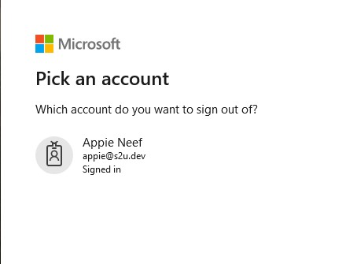

Single Sign On in Odoo with the same account as your office 365 / Azure AD Account.
15-04-2020 - Update: if Odoo users not exist, you can let them create automaticaly by setting systemparameter: s2u_msaccount with the value True of true.Please be sure that when creating your App in Azure: "Accounts in this organization directory only (Company name - Single tenant)" is selected. Otherwise other MS users can also create a Odoo account in your Application.

Select "App registrations"

Register new application

Fill in application details
For this example Odoo is running localy. So in this case we fill in:
Odoo 13 - test
And at Redirect URI:
http://localhost:8071/auth_oauth/microsoft

Filled in example

When App Registration is done, in the overview copy the "Application (client) ID". This we need in Odoo

To gain access, we need a secret key. go to "Certificates & Secrects" and select "New client secret"

Fillin a description and select expire time.

Filled example

After created secret key, store the value of this key. We need this in Odoo

Give user permissions to view own data.
All this is done via the Microsoft Graph Api. Microsoft Graph documentation
Select Microsoft Graph:

Choose Delegated permissions:

Search for user.read in the search bar and check User.Read.All

Grant admin consent for the company:

Odoo setting after installing the app:

Odoo setting after installing the app:

Create a new connection if Microsoft not exists. Or edit it.

After installing the app and the settings are done. Go to the site:

login with you microsoft account:

give permisions to Odoo to read your profile:

Don't forget to logout, Your Mircosoft session is stil active when you don't log in to Odoo:
